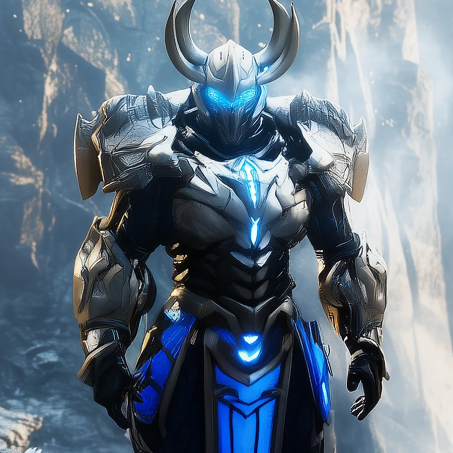
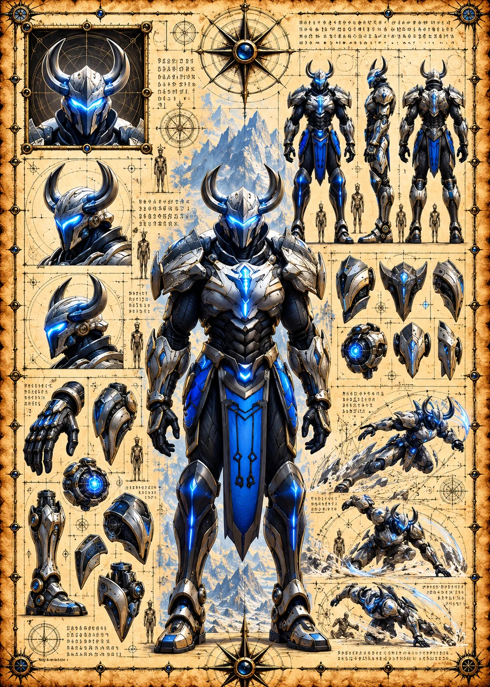

©
©
GENEZYS ARCHIVE · Earth 1 · Legionnaire
Glona
Abyss Breaker

Archive record
Glona once walked into the abyss to drag a fallen Marauder back out. The Singularity Slam returns an ally to the fight and pierces an enemy in the same blow. In the Longhouse, the comrade Glona saved still pours the first drink every night.
Combat signature
Singularity Slam
90 Cosmara
360 Animus
330 Vitalis
Enlightens eclipsed ether: Revives 1 ally with 200 Vitalis, 150 Cosmara and 1 CD. Deals 110 pierce damage to 1 enemy.
Genezys 09:07 ™&©2026LEGIONS
